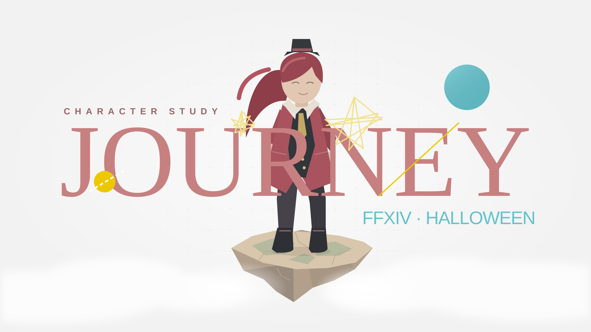

PHOTO TEMPLATE STUDIES / 2026.10
照片模板试验档案
四种把透明角色 PNG 转成照片作品的尝试。保存版式、素材和可以运行的原型，作为以后设计时能回看的基准。
本地基准档案 · 2026-10-26


看过、做过，留下一个参照
P01 与 P02 保留几何占位人物；P03 与 P04 默认留空。所有原型可直接打开，方案由各自页面保存，刷新前请先保存修改。
四种把透明角色 PNG 转成照片作品的尝试。保存版式、素材和可以运行的原型，作为以后设计时能回看的基准。
本地基准档案 · 2026-10-26


P01 与 P02 保留几何占位人物；P03 与 P04 默认留空。所有原型可直接打开，方案由各自页面保存，刷新前请先保存修改。